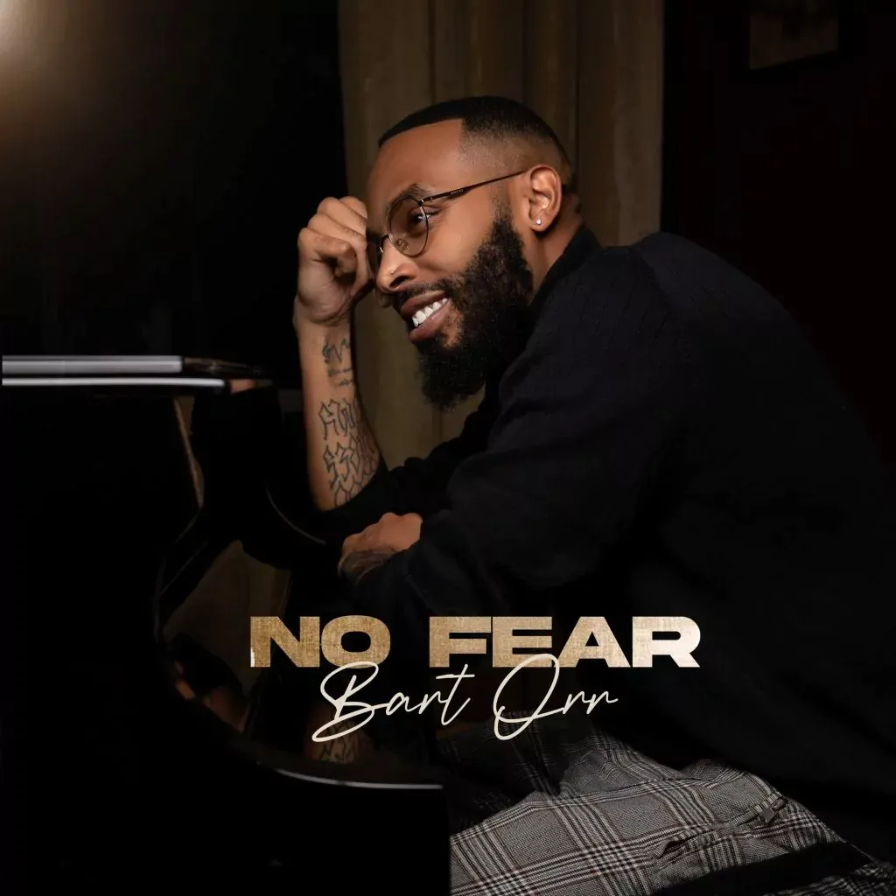

Bartholomew Orr II aka B2 breaks away from the trivialities of music, and instead chooses to focus on what matters most – advocating for the expression of emotion in its purest form.
For Bart, music represents an all-encompassing surrender, a pledge to self-honesty or what he calls Barthology, the truth that’s too good to be true.
Often soft-spoken and invariably sullen in his producing style, this Grammy nominated Stellar award-winning producer delves into deeper things of spirituality. Every beat is deeply rooted in conveying the most intimate moments of the human experience. Above all, it’s deep, it’s sensual – and it grooves.